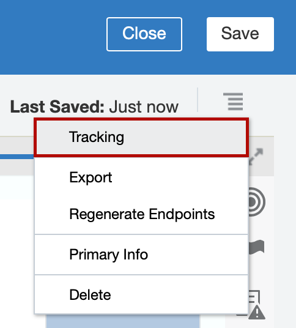

Oracle Integration - ERP Cloud Events Lab
Oracle Integration - ERP Cloud Events Lab
Before You Begin
Some steps in this tutorial have a  icon next to them. Click this icon to copy the snippet of text to your clipboard and then paste where needed.
icon next to them. Click this icon to copy the snippet of text to your clipboard and then paste where needed.
Your lab facilitator will provide you the following information to access the environments used in this lab.
OIC Environment
Select your OIC Environment:
OIC URL:
OIC User Name:
Your OIC Password will be provided by your lab facilitator.
ERP Cloud Environment
Select your ERP Cloud Environment:
ERP Cloud URL:
ERP Cloud User Name:
Your ERP Cloud Password will be provided by your lab facilitator.
Background
Oracle Integration provides native connectivity to Oracle and non-Oracle Software as a Service (SaaS) and On-premises applications, such as Oracle ERP Cloud, Oracle Service Cloud, HCM Cloud, Salesforce.com, Workday, EBS, SAP, NetSuite and so on. Oracle Integration adapters simplify connectivity by handling the underlying complexities of connecting to applications using industry-wide best practices. You only need to create a connection that provides minimal connectivity information for each system.
Use Case
This use case explores the use of Oracle Integration to subscribe to Oracle ERP Cloud Events and push the relevant event information to downstream systems. As part of the lab you would be building the below use case scenario.
- User creates a Purchase Order(PO) in ERP Cloud and a PO event is raised (Flow1).
- Oracle Integration subscribes to the PO event, transforms and pushes the relevant information to a custom table (VBCS) (Flow1).
- User attaches Letter of Credit (LOC) information to the PO record from the VBCS Web App (Flow2).
- PO Record in ERP Cloud is updated with the LOC information in ERP cloud (Flow2).
The following diagram illustrates the proposed interaction between the systems involved in this use case. There 2 flows to complete this use case.

Sign In
Access to Oracle Integration is secured through Oracle Identity Cloud Service. Users may be granted access to all the Oracle Integration environments in a cloud tenancy, or they may be restricted to specific environments. They may be assigned different roles in each environment.
Open a browser to the OIC URL.
OIC URL:
Enter your OIC User Name.
OIC User Name:
Enter your OIC Password provided by your lab facilitator and click Sign In.
The Welcome page appears. Check out the tour, videos, and links to learn more. Keep scrolling to find more useful links.
Click Home.
The Home page displays an overview with the current state of your instance. You can drill down to get information about available Processes, Integrations, and Visual Applications.

You are now logged in and ready to use Oracle Integration.
Documentation
You will find additional documents and assets needed to complete this lab below.
- ERP Cloud Events Lab Guide
-
Please enter your user number above to access your download
- XpathExpr.txt
Prepare VBCS LOC App
Import a VBCS App
-
Download your Letter of Credit App.
Please enter your user number above to access the download From the Home page’s Navigation menu, select Visual Builder, and then select Visual Applications.
This is where you create Visual Builder Apps. Depending on previous activity in your environment you may already have some Visual Builder Apps listed. If you do, just ignore them, we will import our own.
- Click Import.
- Click Application from file.
- Import the VBCS App you downloaded and click Import.
Business Object API
Open your VBCS App.
The app contains a Web Application and several Business Objects.
- Click
 to view the Business Objects.
to view the Business Objects. - Click PO to select the PO Business Object.
- Click Endpoints then expand Resource APIs to view the PO Business Object API.
Click
 on Data Development to copy the the Business Object URL.
on Data Development to copy the the Business Object URL.You will use this URL in the next section to create an Integration Connection to the Business Object API.
- Click
 then to return to the Oracle Integration Home page.
then to return to the Oracle Integration Home page.
Create VBCS Connection
- From the Home page’s Navigation menu, select Integrations, and then select Connections.
- Click Create.
- Search for and select the REST Adaptor, then click Select.
- Create the Connection with the following, then click Create.
Field Entry Name VBCS RESTRole Invoke - Configure the connection properties:
- From the Connection Type list, select REST API Base URL.
In the Connection URL text field, enter the Business Object API URL and remove the "PO" at the end of the URL.
For example:
/ic/builder/design/LetterOfCreditPortal/1.0/resources/data- Click OK.
- Configure the security:
- From the Security Policy list, select Basic Authentication.
- In the Username text field, enter
. - Click OK.
- Click Test.
- Click Save.
Create the Event Integration
Create an Integration
- On the Home page, click Integrations.
- On the Integrations page, click Create.
- In the Select a Style/Pattern dialog, select App Driven Orchestration.
- On the Create New Integration dialog, configure the integration:
What do you want to call your integration?
Enter
ERP PO Event VBCS - Identifier: leave the default value (this is the name of the integration in uppercase).
Version: leave the default value.
(Optional) If you want to change the version number, use the format
##.##.####.What does this integration do?
Enter the following text:
This integration shows you how to use Oracle Integration ERP Cloud Adapter Event with the REST adapter to store a purchase order record in the VBCS PO table.- Which package does this integration belong to?: leave blank.
- Click Create.
Create a Trigger
- Hover over START and click .
- Type
ERPin the Search field to find your rest connection. Select the connection that starts with ERP Connection.
The Configure Oracle ERP Cloud Endpoint wizard appears.
- Name your endpoint
POEVENT. - In the What does this endpoint do? field, enter
This endpoint subscribes to the purchase order events. - Click Next.
- On the Request page, configure the request properties:
- From the Configure a Request options, select With Business Events.
- In the Business Event For Subscription type
Purchase. Select Purchase Order Event.
In the Filter Expr for Purchase Order Event field, enter the following expression:
<xpathExpr xmlns:ns0="http://xmlns.oracle.com/apps/prc/po/editDocument/purchaseOrderServiceV2/" xmlns:ns2="http://xmlns.oracle.com/apps/prc/po/editDocument/purchaseOrderServiceV2/types/">$eventPayloa d/ns2:result/ns0:Value/ns0:PurchaseOrderLine/ns0:ItemDescription="Lan Cable"</xpathExpr>- Click Next.
- On the Response page, from the Response Type options, select None.
Click Next.
A summary of the properties you configured appears.
- Review the summary and click Done.
Retrieve the Purchase Order from the Visual Builder Cloud Service Table
- Hover over the outgoing arrow for POEVENT and click .
- Type
VBCS_REST_CON_in the Search field to find your rest connection. Select the REST connection that contains your user number.
The Configure REST Endpoint wizard appears.
On the Basic Info page, configure the REST endpoint:
- Name your endpoint
GETPO. - In the What does this endpoint do? field, enter
This endpoint retrieves the purchase order information from the Visual Builder Cloud Service tables if the purchase order exists. - In the relative resource URI, enter
/PO. - In the action to perform on the endpoint field, select GET.
In the options that you want to configure section, select:
- Add and review parameters for this endpoint
- Configure this endpoint to receive the response
- Click Next.
- Name your endpoint
On the Request Parameters page, add a query parameter:
- Click .
- In the Name column, enter
q. - From the list in the Data Type column, select string.
- Click Next.
This query parameter will allow us to search for the purchase order, you can run a search using a query similar to:
https:///ic/builder/design/LetterOfCreditPortal/1.0/resources/data/PO?q=pOHeaderId=300000074157561 - In the Response page, configure the following values:
From the response payload format list, select JSON Sample.
- Click the <<<inline>>> link.
- Enter the following JSON sample:
{ "items": [ { "id": 24, "creationDate": "2019-01-13T23:12:09+00:00", "lastUpdateDate": "2019-01-13T23:12:09.027+00:00", "createdBy": "john.doe@example.com", "lastUpdatedBy": "john.doe@example.com", "pOHeaderId": "300000074157561", "orderNumber": "162180", "procurementBUId": "300000046987012", "procurementBusinessUnit": "US1 Business Unit", "supplierId": "300000047414679", "supplier": "Dell Inc.", "soldToLegalEntity": "US1 Legal Entity", "lOCId": null, "links": [ { "rel": "self", "href": "https://oic_host/ic/builder/design/LetterOfCreditPortal/1.0/resources/data/PO/24", "name": "PO", "kind": "item", "properties": { "changeIndicator": "ACED0005737200136A6176612E7574696C2E41727261794C6973747881D21D99C7619D03000149000473697A65787 000000001770400000001737200106A6176612E6C616E672E446F75626C6580B3C24A296BFB0402000144000576616C 7565787200106A6176612E6C616E672E4E756D62657286AC951D0B94E08B02000078703FF000000000000078" } }, { "rel": "canonical", "href": "https://oic_host/ic/builder/design/LetterOfCreditPortal/1.0/resources/data/PO/24", "name": "PO", "kind": "item" } ] } ], "count": 1, "hasMore": false, "limit": 25, "offset": 0, "links": [ { "rel": "self", "href": "https://oic_host/ic/builder/design/LetterOfCreditPortal/1.0/resources/data/PO", "name": "PO", "kind": "collection" } ] } - Click OK.
Click Next.
A summary of the properties you configured appears.
- Review the summary and click Done.
Click Map to GETPO, and then click
 .
.- In the Target section, locate the query parameter named
q. - From the Components section, drag and drop the concat function (located in the String category) to the
qquery parameter. - Configure the
concatfunction parameters in the Expression for q panel:- Set the first parameter to
pOHeaderId - Set the second parameter to
= - From the Sources section, drag the
POHeaderIdelement and drop it over the concat function. - In the Expression for q panel, click to save your expression.
- Click Validate to check for errors.
- Click Close.
- Click Save.
- Set the first parameter to
- Hover over the outgoing arrow for GETPO and click .
- From the Commonly Used section, click
- In the Create Action dialog, in the Name field, enter
PORecord. Click Create.
The PORecord page appears.
Click to add a new variable.
A new row appears in the Variables table.
- Click the Variable column for the new row, and rename the variable to
PORecordCount. - From the list in the Data Type column, select String.
- Click to add an expression that assigns a value to the
PORecordCountvariable. - In the expression builder, from the Source tree in the Input section, drag the count element and drop it over the Expression field.
- Click Validate.
- Click Close to close the expression builder.
- Click Close to close the PORecord page.
- Click Save.
- Hover over the outgoing arrow for PORecordActivity and click .
From the Commonly Used section, click .
A switch block appears in the Integration canvas.

Define the if flow (condition 1):
- Select condition 1 (Undefined).
Click
.The expression builder appears.
- In the Expression Name field, enter
PO record exists in VBCS. - From the Source list in the Inputs, drag the PORecordCount element and drop it over the first field of the New Condition.
- In the field after the equal sing in the New Condition, type
"1" - Click Validate.
- Click Close.
- Click Save.
- Hover over the outgoing arrow for condition 1 and click .
- From the Commonly Used section, click .
- In the Create Action dialog, in the Name field, enter
AssignVBCSPOId. Click Create.
The AssignVBCSPOId page appears.
Click to add a new variable.
A new row appears in the Variables table.
- Click the Variable column for the new row, and rename the variable to
VBCSPOId. - From the list in the Data Type column, select String.
- Click to add an expression that assigns a value to the
VBCSPOIdvariable. - In the expression builder, from the Source tree in the Input section, drag the id element and drop it over the Expression field.
- Click Validate.
- Click Close to close the expression builder.
- Click Close to close the AssignVBCSPOId page.
- Click Save.
- Hover over the outgoing arrow for the assign action and click .
- Select the REST connection you created earlier: VBCS_REST_CON_.
In the Basic Info page, configure the endpoint:
- Name your endpoint
UPDATEPO. - In the What does this endpoint do? field, enter
This endpoint updates the purchase with the VBCS cross reference ID. - In the relative resource URI, enter
/PO/{ID}. - In the action to perform on the endpoint field, select PATCH.
In the options that you want to configure section, select:
- Add and review parameters for this endpoint
- Configure a request payload for this endpoint
- Configure this endpoint to receive the response
- Name your endpoint
- Click Next.
- In the Request Parameters page, click Next.
- In the Request page, configure the following values:
From the request payload format list, select JSON Sample.
- Click the <<<inline>>> link.
- Enter the following JSON sample:
{ "orderNumber": "163521", "procurementBUId": "300000046987012", "procurementBusinessUnit": "US1 Business Unit", "supplierId": "300000047414679", "supplier": "Dell.", "soldToLegalEntity": "US1 Legal Entity", "lOCId": 2 } - Click Next.
- In the Response page, configure the following values:
From the response payload format list, select JSON Sample.
- Click the <<<inline>>> link.
- Enter the following JSON sample:
{ "id": 24, "creationDate": "2019-01-13T23:12:09+00:00", "lastUpdateDate": "2019-01-22T16:46:08+00:00", "createdBy": "john.doe@example.com", "lastUpdatedBy": "john.doe@example.com", "pOHeaderId": "300000074157561", "orderNumber": "163521", "procurementBUId": "300000046987012", "procurementBusinessUnit": "US1 Business Unit", "supplierId": "300000047414679", "supplier": "Dell.", "soldToLegalEntity": "300000046973970", "lOCId": null, "links": [ { "rel": "self", "href": "https://oic_host/ic/builder/design/LetterOfCreditPortal/1.0/resources/data/PO/24", "name": "PO", "kind": "item", "properties": { "changeIndicator": "ACED0005737200136A6176612E7574696C2E41727261794C6973747881D21D99C7619D03000149000473697A65787 000000001770400000001737200106A6176612E6C616E672E446F75626C6580B3C24A296BFB0402000144000576616C 7565787200106A6176612E6C616E672E4E756D62657286AC951D0B94E08B0200007870400000000000000078" } }, { "rel": "canonical", "href": "https://oic_host/ic/builder/design/LetterOfCreditPortal/1.0/resources/data/PO/24", "name": "PO", "kind": "item" } ] } Click Next.
A summary of the properties you configured appears.
- Review the summary and click Done.
- Select the Map to UPDATEPO action.
Click
.The Data Mapping page appears.
- Define the following mappings:.
Source Target $VBCSPOIdTemplateParameters ▸ IDonEvent ▸ getPurchaseOrderResponse ▸ result ▸ <sequence> ▸ Value ▸ ProcurementBUIdrequest-wrapper ▸ procurementBUIdonEvent ▸ getPurchaseOrderResponse ▸ result ▸ <sequence> ▸ Value ▸ ProcurementBusinessUnitrequest-wrapper ▸ procurementBusinessUnitonEvent ▸ getPurchaseOrderResponse ▸ result ▸ <sequence> ▸ Value ▸ Supplierrequest-wrapper ▸ supplieronEvent ▸ getPurchaseOrderResponse ▸ result ▸ <sequence> ▸ Value ▸ SupplierIdrequest-wrapper ▸ supplierIdonEvent ▸ getPurchaseOrderResponse ▸ result ▸ <sequence> ▸ Value ▸ HeaderFlexfield ▸ locIdrequest-wrapper ▸ lOCId - Click Validate.
- Click Close.
- Click Save.
- Hover over the outgoing arrow for the Otherwise condition and click .
- Select the REST connection you created earlier: VBCS_REST_CON_.
In the Basic Info page, configure the endpoint:
- Name your endpoint
CREATEPO. - In the What does this endpoint do? field, enter
This endpoint creates a purchase order in Visual Builder Cloud Service. - In the relative resource URI, enter
/PO. - In the action to perform on the endpoint field, select POST.
In the options that you want to configure section, select:
- Configure a request payload for this endpoint
- Configure this endpoint to receive the response
- Name your endpoint
- Click Next.
- In the Request Parameters page, click Next.
- In the Request page, configure the following values:
From the request payload format list, select JSON Sample.
- Click the <<<inline>>> link.
- Enter the following JSON sample:
{ "pOHeaderId": "300000074157551", "orderNumber": "163521", "procurementBUId": "300000046987012", "procurementBusinessUnit": "US1 Business Unit", "supplierId": "300000047414679", "supplier": "Dell Inc.", "soldToLegalEntity": "US1 Legal Entity" } - Click Next.
- In the Response page, configure the following values:
From the response payload format list, select JSON Sample.
- Click the <<<inline>>> link.
- Enter the following JSON sample:
{ "id": 41, "creationDate": "2019-01-22T17:32:24+00:00", "lastUpdateDate": "2019-01-22T17:32:24.027+00:00", "createdBy": "john.doe@example.com", "lastUpdatedBy": "john.doe@example.com", "pOHeaderId": "300000074157551", "orderNumber": "163521", "procurementBUId": "300000046987012", "procurementBusinessUnit": "US1 Business Unit", "supplierId": "300000047414679", "supplier": "Dell Inc.", "soldToLegalEntity": "300000046973970", "lOCId": null, "links": [ { "rel": "self", "href": "https://oichost/ic/builder/design/LetterOfCreditPortal/1.0/resources/data/PO/41", "name": "PO", "kind": "item", "properties": { "changeIndicator": "ACED0005737200136A6176612E7574696C2E41727261794C6973747881D21D99C7619D03000149000473697A657870000 00001770400000001737200106A6176612E6C616E672E446F75626C6580B3C24A296BFB0402000144000576616C75657872 00106A6176612E6C616E672E4E756D62657286AC951D0B94E08B02000078703FF000000000000078" } }, { "rel": "canonical", "href": "https://oichost/ic/builder/design/LetterOfCreditPortal/1.0/resources/data/PO/41", "name": "PO", "kind": "item" } ] } Click Next.
A summary of the properties you configured appears.
- Review the summary and click Done.
- Select the Map to CREATEPO action.
Click
.The Data Mapping page appears.
- Map the source
onEvent ▸ getPurchaseOrderResponse ▸ result ▸ <sequence> ▸ Value ▸ soldToLegalEntityto the targetexecute ▸ request-wrapper ▸ soldToLegalEntity. - Click Validate.
- Click Close.
- Click Save.
Add the Purchase Order Mapping
Define a Counter Variable
Create a Conditional Flow
We will add the if-else logic for the following pseudo-code:
search for PO record based on POHeaderID (implemented in the previous steps)
if (count of PORecords in VBCS) = 1
update existing VBCS PO Record
else
insert a new PO Record
Assign the purchase order ID
Update the Purchase Order
Define the Data Mapping for the Update Action
A Map action named Map to UPDATEPO is automatically created. We'll define this data mapping.
Create Purchase Order
Let's define the else flow.
Define the Data Mapping for the Create Action
A Map action named Map to CREATEPO is automatically created. We'll define this data mapping.
Define Tracking Fields
On the Integration canvas, click
 , and then select Tracking.
, and then select Tracking.
In the Business Identifiers for Tracking dialog, configure tracking fields to identify your instance when a purchase order is created in ERP Cloud:
- In the Source section, select OrderNumber, and then click
 .
. - Select POHeaderId, and then click .
- Select ItemDescription, and then click .
The selected fields appear in the Tracking Fields table.
- In the Source section, select OrderNumber, and then click
- Click Save.
- On the Integration canvas, click Save, and then click Close.
Activate the Event Integration
- On the Integrations page, locate your integration (named ERP PO EVENT VBCS ).
Turn on the slider button.
The Activate Integration dialog appears.
Select the Oracle Recommends option.
This option sends your mappings to the recommendations engine which uses this information to suggest you mappings for similar integrations.
Select Enable Tracing and Include Payload.
Typically this options are disabled in production environments, but we'll enable them for the purpose of this lab.
Click Activate.
Typically the activation completes in a few seconds. If the activation succeeds a confirmation message appears at the top of the page.
Create a Purchase Order in ERP Cloud
- Log in to the ERP Cloud as
casey.brownwith the credentials we provided you. - Select the Procurement tab.
- Click Purchase Orders.
- Select the Tasks tab.
- Click Create Order.
- In the Supplier field, enter
Dell Inc.. - For the rest of the fields, leave the default value.
- Click Create.
- On the Purchase Order page, in the Additional Information section, edit the row in the Lines table and set the following values:
- Type: select Goods.
- Description: enter the same unique value that you chose when you configured the ERP adapter PO Event, and that you used in the xpath expression.
- Category Name: enter
Computer Supplies. - Quantity UOM: select 1.
- Price: enter
5.00.
- Click Submit to create the purchase order.
- Write down the order number.
- Select the Tasks tab.
- Select Manage Order.
- Search for you order using the order number you wrote down, and then wait for the Status field to change to Open.
Review Tracking
- In Oracle Integration, select Monitoring from the Navigation menu, and then select Tracking.
- In the Search field, enter your order number.
- Click the instance that appears as the result of the search.
Verify that the flow completed successfully.
Notice that because this is a new purchase order record that doesn't exist in Visual Builder Cloud Service, the condition will resolve to the Otherwise flow path.
- Click Close.
- Click .
- Click Visual Builder.
- Select the Business Objects tab.
- Click the PO object, verify that a new record was created.
You just completed the first flow of this use case.
Update the Letter of Credit
Create an Integration
- On the Home page, click Integrations.
- On the Integrations page, click Create.
- In the Select a Style/Pattern dialog, select App Driven Orchestration.
- On the Create New Integration dialog, configure the integration:
What do you want to call your integration?
Enter
ERP PO Proxy - Identifier: leave the default value (this is the name of the integration in uppercase).
Version: leave the default value.
(Optional) If you want to change the version number, use the format
##.##.####.What does this integration do?
Enter the following text:
This integration shows you how to use Oracle Integration REST Adapter to create a REST to SOAP proxy for ERP Cloud web services.- Which package does this integration belong to?: leave blank.
- Click Create.
Create a Trigger
- Hover over START and click .
- Type
PO RESTin the Search field to find your rest connection. Select the REST connection that contains your user number.
The Configure REST Endpoint wizard appears.
On the Basic Info page, configure the REST endpoint:
- Name your endpoint
POPROXY. - In the What does this endpoint do? field, enter
This endpoint is a REST interface for the purchase order service. - In the relative resource URI, enter
/PO. - Click Next.
- Name your endpoint
On the Resource Configuration page, configure the resource:
- Name your operation name
POPROXY. - In the relative resource URI, enter
/PO_PROXY. - In the action to perform on the endpoint field, select POST.
In the options that you want to configure section, select:
- Configure a request payload for this endpoint
- Configure this endpoint to receive the response
- Click Next.
- Name your operation name
- In the Request page, configure the following values:
From the response payload format list, select JSON Sample.
- Click the <<<inline>>> link.
- Enter the following JSON sample:
{ "id": 24, "lOCId": 3, "orderNumber": "163521", "pOHeaderId": "300000074157561", "procurementBUId": "300000046987012", "procurementBusinessUnit": "US1 Business Unit", "soldToLegalEntity": "US1 Legal Entity", "supplier": "Dell.", "supplierId": "300000047414679" } - In the Response page, configure the following values:
From the response payload format list, select JSON Sample.
- Click the <<<inline>>> link.
- Enter the following JSON sample:
{ "pOHeaderId":"300000074157561", "orderNumber":"162180", "soldToLegalEntityId":"300000074157561", "changeOrderNumber":3, "requestStatus":"SUCCESS" } - Click OK.
Click Next.
A summary of the properties you configured appears.
Review the summary and click Done.
A Request/Response Flow is created.
- Delete the Map to POPROXY action.
Update the Purchase Order in the ERP
- Hover over the outgoing arrow for POPROXY and click .
- Type
ERP Connin the Search field. Select the connection named “ERP Conn 96 06”.
This connection was created for you for this lab.
The Configure REST Endpoint wizard appears.
On the Basic Info page, configure the REST endpoint:
- Name your endpoint
CHANGEPO. - In the What does this endpoint do? field, enter
This endpoint updates the purchase order.
- Name your endpoint
On the Actions page, select Query, Create, Update or Delete Information.
This is to consume the Purchase Order V2 Service.
On the Operations page:
- From the Browse by list, select Services.
- In the Select a Service field, type Purchase to search for the purchase order.
Select PurchaseOrderService.
To confirm that you have selected the right PurchaseOrderService service, verify that the list of operations contains the operation acknowledgePurchaseOrder.
- From the operation to perform list, select changePurchaseOrder.
- Click Next.
Review the summary and click Done.
An action configured to invoke the changePO operation and a Map to changePO map appear on the Integration canvas. The map is empty.
Define the Mapping for the ERP Purchase Order
- Select the Map to changePO action.
Click
.The Data Mapping page appears.
- In the Sources section, expand the execute element, and then expand the request-wrapper element.
- In the Target section, expand the changePurchaseOrder element, and then expand the changeOrderEntry element.
- Map the pOHeaderId element in the Sources section, to the pOHeaderId element in the Target section.
- In the Target section, expand the changeOrderEntry element, and right-click the ChangeOrderDescription element.
Select Create Target Node.
The expression builder dialog appears.
- In the expression builder dialog, enter
‘Update of LOCId’. - Click to save your expression.
- In the Target section, expand the HeaderFlexField element.
- Map the id element in the Sources section, to the customerPo element in the Target section.
- Map the lOCId element in the Sources section, to the locId element in the Target section.
- Click Validate to check for errors.
- Click Close.
- Click Save.
Define the Response Mapping
- Hover over the outgoing arrow for changePO and click .
From the Actions section, select Map.
The Map to POProxy action appears on the Integration canvas.
- In the Sources section, expand the $changePO element, then expand the changePurchaseOrderResponse element, and then expand the result element.
- In the Target section, expand the executeResponse.
- Map the POHeaderId element in the Sources section, to the poHeaderId element in the Target section.
- Map the OrderNumber element in the Sources section, to the orderNumber element in the Target section.
- Map the SoldtoLegalEntityId element in the Sources section, to the soldToLegalEntityId element in the Target section.
- Map the ChangeOrderNumber element in the Sources section, to the changeOrderNumber element in the Target section.
- Map the RequestStatus element in the Sources section, to the requestStatus element in the Target section.
- Click Validate to check for errors.
- Click Close.
Define Tracking Fields
On the Integration canvas, click
, and then select Tracking.In the Business Identifiers for Tracking dialog, configure tracking fields to identify your instance when a purchase order is created in ERP Cloud:
- In the Source section, select OrderNumber, and then click .
- Select id, and then click .
- Select IOCid, and then click .
The selected fields appear in the Tracking Fields table.
- In the Source section, select OrderNumber, and then click
- Click Save.
- On the Integration canvas, click Save, and then click Close.
Activate LOC Integration
- On the Integrations page, locate your integration (named ERP PO Proxy ).
Turn on the slider button.
The Activate Integration dialog appears.
Select the Oracle Recommends option.
This option sends your mappings to the recommendations engine which uses this information to suggest you mappings for similar integrations.
Select Enable Tracing and Include Payload.
Typically this options are disabled in production environments, but we'll enable them for the purpose of this lab.
Click Activate.
Typically the activation completes in a few seconds. If the activation succeeds a confirmation message appears at the top of the page.
Obtain the Swagger URL
Click
 (located next to the activate slider).
(located next to the activate slider).A box with the a link to the endpoint metadata appears.
Open the Endpoint URL in a web browser.
The metadata page provides a detailed description for your REST endpoint.
Copy the Swagger URL from the endpoint metadata description.
In the next section, we'll use the Swagger definition to create a service connection in the Visual Builder Cloud Service web application.
Update the Letter of Credit App
Create Service Connection
- In Oracle Integration, click .
- Click Visual Builder.
- From the list of applications, open the LetterOfCreditPortal web application.
- If the Navigator menu isn't visible, click
 located below the Navigation menu icon.
located below the Navigation menu icon. - From the Navigator menu, click .
- Click the + Service Connection button to create a new service connection that you will invoke with the click of a button.
- On the Create Service Connection page, click Define by Specification.
- In the Create Service Connection dialog, configure the service specification:
- From the API Type list, select Swagger.
- From the Service Specification options, select Web Address, and then enter the swagger URL that you copied in the previous section.
- In the Service Id field, enter
POPROXY. - From the Authentication Mechanism list, select Basic.
- In the Username and Password fields, enter your Oracle Integration credentials.
- Click Next.
- In the Select Endpoints section, select PO_PROXY
Click Create.
A connection to the endpoint is created.
Add Action
- From the Navigator menu, click .
- In the Web Apps tree, expand localapp, then expand flows, and then expand main.
Select editopage.
The editopage tab appears.
- In the editopage tab, click Change Order.
- In the Design pane, select the Events tab.
- Click + New Event and select Quick Start:'ojAction' to create a new action chain.
- In the Id field, enter
ChangeOrderAction.
Create the Service Connection
- From the Actions palette, drag Call REST Endpoint to the canvas, and drop it over .
- In the Call REST Endpoint pane, click Select Endpoint.
- Configure the service connection that you created earlier.
Click Select.
The endpoint is now configured to be invoked from the action chain.
Select Parameters.
The mapper page appears.
- In the Sources tree, expand Page.
Map $poRecord in the Sources section, to body in the Target section.
This maps the
editpopagepage variables to the interface of the endpoint.An expression is generated based on the mapping you defined.
poRecordis a page variable that stores the data fromeditpopage.Click Save.
The body parameter now appears marked as MAPPED.
- From the Actions palette, drag Fire Notifications to the canvas, and drop it over .
- In the Fire Notification panel, in the Message field, enter a message.
- From the Notification Type list, select info.
Run VBCS LOC App
Add PO LOC
Click .
The web application opens up in a separate web browser. We have provided you a basic web app for you to test the end-to-end flow.
Click LC List Page.
All the letters of credit appear in a table.
- Click Back.
Click PO List Page.
Notice that the PO record that we created in ERP Cloud was also synchronized to Visual Builder Cloud Service.
- Click Edit PO.
- On the Edit PO page, from the LOC Id list, select the letter of credit ID.
- For the rest of the fields, leave the default value.
Click Change Order.
This button invokes the
ERP PO Proxy An instance is created.
Review Tracking
- In Oracle Integration, in the Navigation menu, select Monitoring, then select Integrations, and then select Tracking.
- Click the Order Number and confirm that the flow was successfully completed. The flow will be gree, to indicate that it ran successfully.
- In your web application, in the Edit PO Page, notice an information message that confirms that the payload was submitted to the Proxy Integration flow.
In Oracle Integration, in the Tracking page, notice that a new instance was created.
This instance was created because when LOCId was updated in ERP Cloud, it triggered the Flow 1 again. The purchase order event is raised when creating or updating records.
- Open the new instance, note that the if condition was true so the resulting flow updated the purchase order in Visual Builder Cloud Service.
Review PO LOC
- In Oracle Integration, in the Navigation menu, select Monitoring, then select Integrations, and then select Tracking.
- Click the Order Number and confirm that the flow was successfully completed. The flow will be gree, to indicate that it ran successfully.
- In your web application, in the Edit PO Page, notice an information message that confirms that the payload was submitted to the Proxy Integration flow.
In Oracle Integration, in the Tracking page, notice that a new instance was created.
This instance was created because when LOCId was updated in ERP Cloud, it triggered the Flow 1 again. The purchase order event is raised when creating or updating records.
- Open the new instance, note that the if condition was true so the resulting flow updated the purchase order in Visual Builder Cloud Service.
- Go back to the PO List page in your web application, note that the LOCId field was updated.
You just finished defining and testing the second flow, an end-to-end flow to capture the purchase order events and update the corresponding letter of credit identifier in the Visual Builder Cloud Service web application.